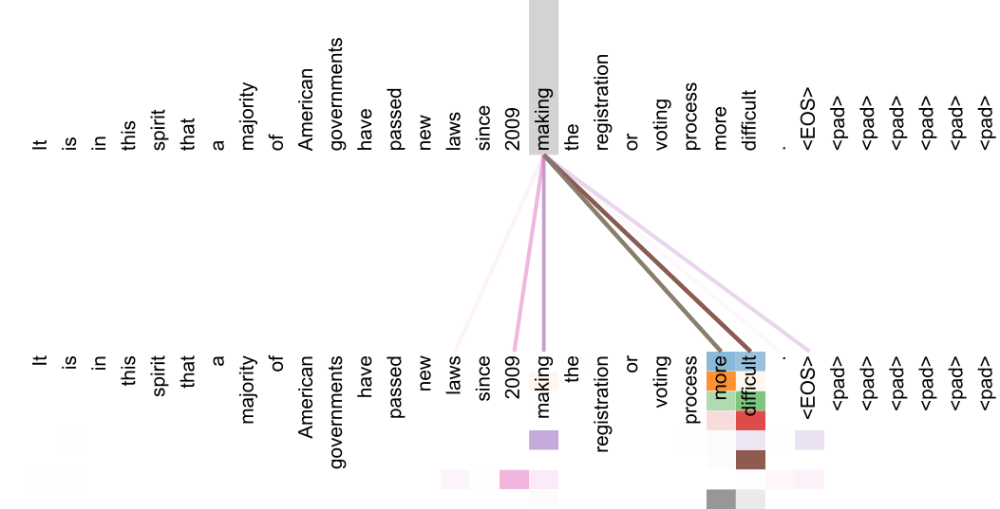
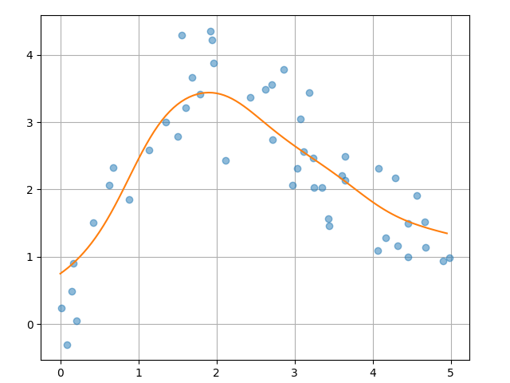
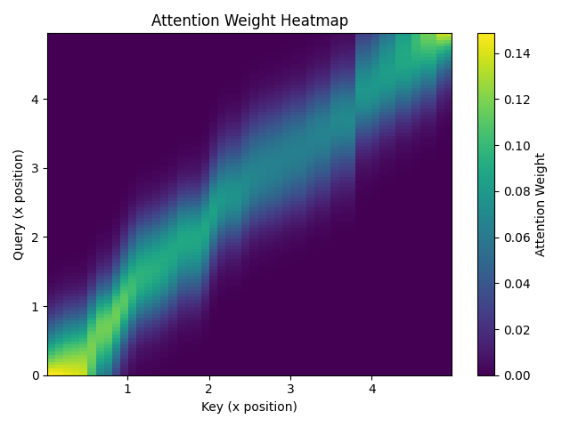
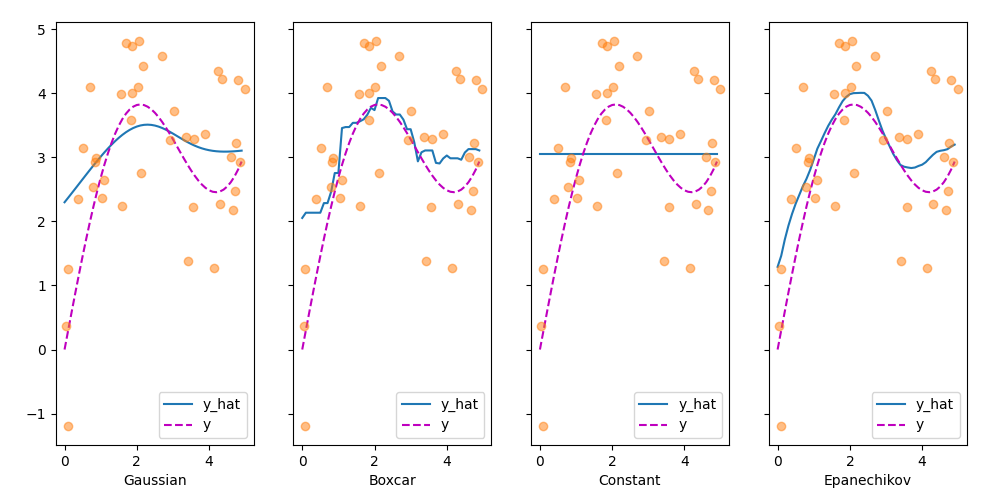
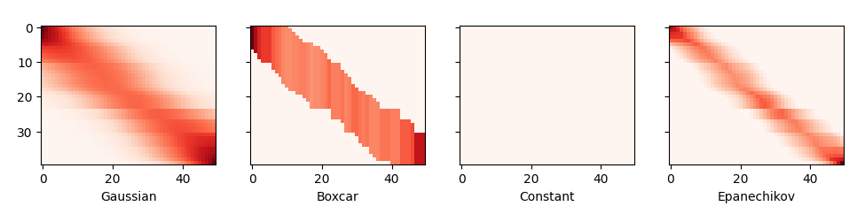
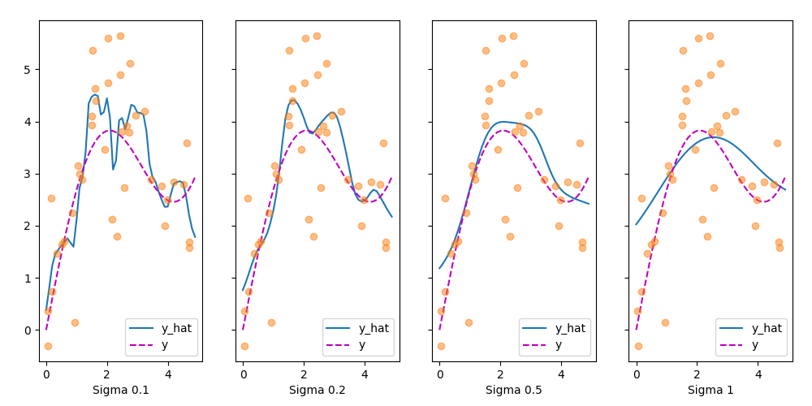
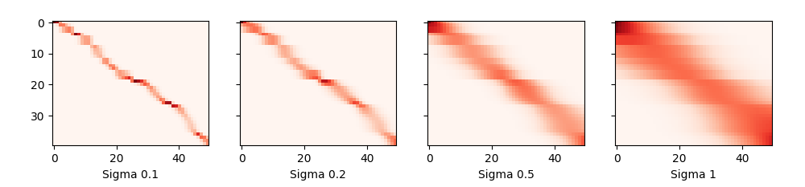
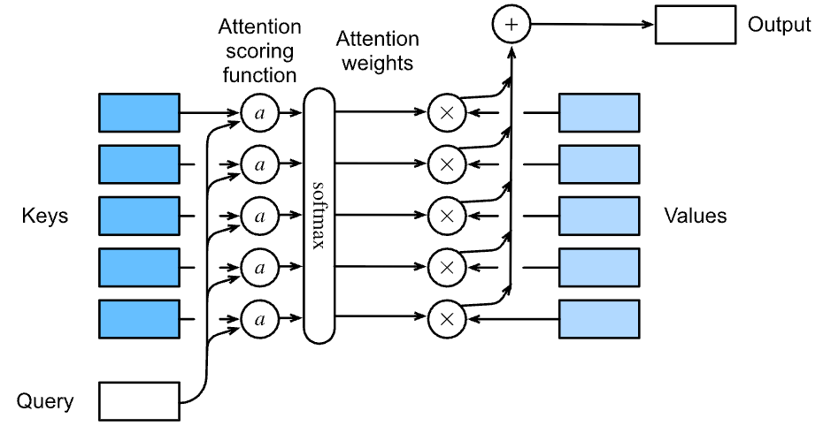
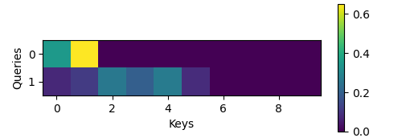
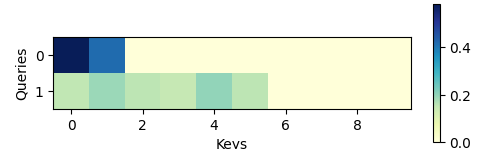

5.1 Attention Mechanism
An attention mechanism is a machine learning technique that directs deep learning models to prioritize (or attend to) the most relevant parts of input data. Innovation in attention mechanisms enabled the transformer architecture that yielded the modern large language models (LLMs) that power popular applications like ChatGPT.
Created Date: 2025-05-19
As their name suggests, attention mechanisms are inspired by the ability of humans (and other animals) to selectively pay more attention to salient details and ignore details that are less important in the moment. Having access to all information but focusing on only the most relevant information helps to ensure that no meaningful details are lost while enabling efficient use of limited memory and time.
We can explain the relationship between words in one sentence or close context. When we see "eating", we expect to encounter a food word very soon. The color term describes the food, but probably not so much with "eating" directly.

Figure 1 - Simple Sentence Atttention
Mathematically speaking, an attention mechanism computes attention weights that reflect the relative importance of each part of an input sequence to the task at hand. It then applies those attention weights to increase (or decrease) the influence of each part of the input, in accordance with its respective importance. An attention model - that is, an artificial intelligence model that employs an attention mechanism — is trained to assign accurate attention weights through supervised learning or self-supervised learning on a large dataset of examples.
An example of the attention mechanism from Transformer paper following long-distance dependencies in the encoder self-attention in layer 5 of 6. Many of the attention heads attend to a distant dependency of the verb 'making', completing the phrase 'making...more difficult'. Attentions here shown only for the word 'making'. Different colors represent different heads. Best viewed in color:

Figure 2 - Attention Visualizations
Attention mechanisms were originally introduced by Bahdanau et al. in 2014 as a technique to address the shortcomings of what were then state-of-the-art recurrent neural network (RNN) models used for machine translation. Subsequent research integrated attention mechanisms into the convolutional neural networks (CNNs) used for tasks such as image captioning and visual question answering.
In 2017, the seminal paper Attention is All You Need introduced the transformer model, which eschews recurrence and convolutions altogether in favor of only attention layers and standard feedforward layers. The transformer architecture has since become the backbone of the cutting-edge models powering the ongoing era of generative AI.
While attention mechanisms are primarily associated with LLMs used for natural language processing (NLP) tasks, such as summarization, question answering, text generation and sentiment analysis, attention-based models are also used widely in other domains. Leading diffusion models used for image generation often incorporate an attention mechanism. In the field of computer vision, vision transformers (ViTs) have achieved superior results on tasks including object detection, image segmentation and visual question answering.
5.1.1 Queries, Keys, and Values
So far all the networks we have reviewed crucially relied on the input being of a well-defined size. For instance, the images in ImageNet are of size \(224 \times 224\) pixels and CNNs are specifically tuned to this size. Even in natural language processing the input size for RNNs is well defined and fixed.
Variable size is addressed by sequentially processing one token at a time, or by specially designed convolution kernels. This approach can lead to significant problems when the input is truly of varying size with varying information content. In particular, for long sequences it becomes quite difficult to keep track of everything that has already been generated or even viewed by the network.
Compare this to databases. In their simplest form they are collections of keys (\(k\)) and value (\(v\)). For instance, our database \(\mathcal{D}\) might consist of tuples {("Zhang", "Aston"), ("Lipton", "Zachary"), ("Li", "Mu"), ("Smola", "Alex"), ("Hu", "Rachel"), ("Werness", "Brent")} with the last name being the key and the first name being the value.
We can operate on \(\mathcal{D}\), for instance with the exact query for "Li" which would return the value "Mu". If ("Li", "Mu") was not a record in \(\mathcal{D}\), there would be no valid answer. If we also allowed for approximate matches, we would retrieve ("Lipton", "Zachary") instead.
This quite simple and trivial example nonetheless teaches us a number of useful things:
We can design queries \(q\) that operate on \((k, v)\) pairs in such a manner as to be valid regardless of the database size.
The same query can receive different answers, according to the contents of the database.
The "code" being executed for operating on a large state space (the database) can be quite simple (e.g., exact match, approximate match, top-k).
There is no need to compress or simplify the database to make the operations effective.
Clearly we would not have introduced a simple database here if it wasn't for the purpose of explaining deep learning. Indeed, this leads to one of the most exciting concepts introduced in deep learning in the past decade: the attention mechanism.
We will cover the specifics of its application to machine translation later. For now, simply consider the following: denote by \(\mathcal{D} = {(k_1, v_1), \cdots, (k_m, v_m)}\) a database of \(m\) tuples of keys and values. Moreover, denote by \(q\) a query. Then we can define the attention over \(\mathcal{D}\) as:
where \(\alpha(q, k_i) \in \mathbb{R} (i = 1, \cdots , m)\) are scalar attention weights. The operation itself is typically referred to as attention pooling. The name attention derives from the fact that the operation pays particular attention to the terms for which the weight \(\alpha\) is significant (i.e., large).
As such, the attention over \(\mathcal{D}\) generates a linear combination of values contained in the database. In fact, this contains the above example as a special case where all but one weight is zero. We have a number of special cases:
The weights \(\alpha(q, k_i)\) are nonnegative. In this case the output of the attention mechanism is contained in the convex cone spanned by the values \(v_i\) .
The weights \(\alpha(q, k_i)\) form a convex combination, i.e. \(\sum_i \alpha(q, k_i) = 1\) and \(\alpha(q, k_i) \ge 0\) for all \(i\). This is the most common setting in deep learning.
Exactly one of the weights \(\alpha(q, k_i)\) is 1, while all others are 0. This is akin to a traditional database query.
All weights are equal, i.e. \(\alpha(q, k_i) = \frac{1}{m}\) for all \(i\). This amounts to averaging across the entire database, also called average pooling in deep learning.
A common strategy for ensuring that the weights sum up to 1 is to normalize them via:
In particular, to ensure that the weights are also nonnegative, one can resort to exponentiation. This means that we can now pick any function \(\alpha(q, k)\) and then apply the softmax operation used for multinomial models to it via:
This operation is readily available in all deep learning frameworks. It is differentiable and its gradient never vanishes, all of which are desirable properties in a model. Note though, the attention mechanism introduced above is not the only option.
For instance, we can design a non-differentiable attention model that can be trained using reinforcement learning methods. As one would expect, training such a model is quite complex. Consequently the bulk of modern attention research follows the framework outlined in Figure 3. We thus focus our exposition on this family of differentiable mechanisms.

Figure 3 - Query - (Keys, Values)
For simplicity, consider the following regression problem, given a dataset of input-output pairs:
how can we learn a function \(f\) to predict the output \(\hat{y} = f(x)\) for any new input \(x\).
Generate a synthetic dataset based on the following nonlinear function:
Here, \(\xi\) is the added noise term, which follows a normal distribution with mean 0 and standard deviation 0.5 .In this example, 50 training samples are generated. For better visualization, the training samples are sorted. The code is in the file random_point_dataset.py .
def func(x):
return 2 * numpy.sin(x) + x**0.8
rng = numpy.random.default_rng(0)
n_train = 50
keys = numpy.sort(rng.random(n_train) * 5)
values = func(keys) + rng.normal(0.0, 0.5, (n_train,))The \(\alpha(q, k)\) function calculates how much attention a query should pay to each key based on how close they are. Instead of using the standard dot-product method like in Transformers, it uses a distance-based approach. It measures the squared distance between the query and each key, then applies a Gaussian function to turn these distances into similarity scores. Finally, it normalizes the scores so they add up to one. This method gives higher attention to keys that are closer to the query, making it useful for tasks where local similarity matters.
def compute_attention_weights(query, keys, sigma):
# Compute distance-based weights
dist = (query - keys) ** 2
weights = numpy.exp(-dist / (2 * sigma**2))
return weights / weights.sum()The simple_attention function computes attention-based outputs for a sequence of queries. For each query, it calculates attention weights over fixed keys using a Gaussian function, giving more weight to nearby keys. It then uses these weights to compute a weighted sum of values. The function returns both the result and the attention weights for all queries.
def simple_attention(x, sigma=1.0):
n = len(x)
result = numpy.zeros(n)
attention_history = []
for i in range(n):
attention_weights = compute_attention_weights(x[i], keys, sigma)
result[i] = numpy.sum(attention_weights * values)
attention_history.append(attention_weights)
return result, attention_history
queries = numpy.arange(0, 5, 0.05)
result, attn_matrix = simple_attention(queries, sigma=0.5)We can draw the result in Figure 4, it shows how the weighted sum of values changes smoothly as the query moves along the input range:

Figure 4 - Distance-Based Attention Output
Figure 5 shows the attention weights assigned to each key for different query positions. The brighter areas indicate higher weights, meaning the query pays more attention to keys nearby. This highlights how the Gaussian kernel focuses attention locally, with weights decreasing smoothly as the distance between query and key increases.

Figure 5 - Attention Weights Over Distance
5.1.2 Attention Pooling
Now that we have introduced the primary components of the attention mechanism, let’s use them in a rather classical setting, namely regression and classification via kernel density estimation.
This detour simply provides additional background: it is entirely optional and can be skipped if needed. At their core, Nadaraya–Watson estimators rely on some similarity kernel \(\alpha(q, k)\) relating queries \(q\) to keys \(k\). Some common kernels are:
\(\alpha(q, k) = exp(-\frac{1}{2} {\left| q - k \right|}^2)\)
\(\alpha(q, k) = 1 \quad if \quad \left| q - k \right| \le 1\)
\(\alpha(q, k) = max(0, 1 - \left| q - k \right|)\)
There are many more choices that we could pick. All of the kernels are heuristic and can be tuned. For instance, we can adjust the width, not only on a global basis but even on a per-coordinate basis. Regardless, all of them lead to the following equation for regression and classification alike:
In the case of a (scalar) regression with observations \((x_i, y_i)\) for features and labels respectively, \(v_i = y_i\) are scalars, \(k_i = x_i\) are vectors, and the query \(q\) denotes the new location where \(f\) should be evaluated. In the case of (multiclass) classification, we use one-hot-encoding of \(y_i\) to obtain \(v_i\). One of the convenient properties of this estimator is that it requires no training.
5.1.2.1 Kernels and Data
All the kernels \(\alpha (k, q)\) defined in this section are translation and rotation invariant; that is, if we shift and rotate \(k\) and \(q\) in the same manner, the value of \(\alpha\) remains unchanged. For simplicity we thus pick scalar arguments \(k, q \in \mathbb{R}\) and pick the key \(k = 0\) as the origin. File kernel_func.py yields:
def gaussian(x):
return torch.exp(-x**2 / 2)
def boxcar(x):
return torch.abs(x) < 1.0
def constant(x):
return 1.0 + 0 * x
def epanechikov(x):
return torch.max(1 - torch.abs(x), torch.zeros_like(x))
fig, axes = pyplot.subplots(1, 4, sharey=True, figsize=(9, 5))
kernels = (gaussian, boxcar, constant, epanechikov)
names = ('Gaussian', 'Boxcar', 'Constant', 'Epanechikov')
x = torch.arange(-2.5, 2.5, 0.1)
for kernel, name, ax in zip(kernels, names, axes):
ax.plot(x.numpy(), kernel(x).numpy())
ax.set_xlabel(name)
pyplot.subplots_adjust(left=0.06, right=0.96, top=0.95, bottom=0.12)
pyplot.show()
Figure 6 - Kernel Functions
Different kernels correspond to different notions of range and smoothness. For instance, the boxcar kernel only attends to observations within a distance of 1 (or some otherwise defined hyperparameter) and does so indiscriminately.
To see Nadaraya–Watson estimation in action, let's define some training data. In the following we use the dependency:
where \(\epsilon\) is drawn from a normal distribution with zero mean and unit variance. File nadaraya_regression.py draw 40 training examples:
def f(x):
return 2 * torch.sin(x) + x
n = 40
x_train, _ = torch.sort(torch.rand(n) * 5)
y_train = f(x_train) + torch.randn(n)
x_val = torch.arange(0, 5, 0.1)
y_val = f(x_val)5.1.2.2 Attention Pooling via Nadaraya–Watson Regression
Now that we have data and kernels, all we need is a function that computes the kernel regression estimates. Note that we also want to obtain the relative kernel weights in order to perform some minor diagnostics.
Hence we first compute the kernel between all training features (covariates) x_train and all validation features x_val. This yields a matrix, which we subsequently normalize. When multiplied with the training labels y_train we obtain the estimates.
Recall attention pooling formula , Let each validation feature be a query, and each training feature–label pair be a key–value pair. As a result, the normalized relative kernel weights (attention_w below) are the attention weights.
def nadaraya_watson(x_train, y_train, x_val, kernel):
dists = x_train.reshape((-1, 1)) - x_val.reshape((1, -1))
# Each column/row corresponds to each query/key
k = kernel(dists).type(torch.float32)
# Normalization over keys for each query
attention_w = k / k.sum(0)
y_hat = y_train@attention_w
return y_hat, attention_wLet’s have a look at the kind of estimates that the different kernels produce:
def plot(x_train, y_train, x_val, y_val, kernels, names, attention=False):
fig, axes = pyplot.subplots(1, 4, sharey=True, figsize=(10, 5))
for kernel, name, ax in zip(kernels, names, axes):
y_hat, attention_w = nadaraya_watson(x_train, y_train, x_val, kernel)
if attention:
pcm = ax.imshow(attention_w.detach().numpy(), cmap='Reds')
else:
ax.plot(x_val, y_hat)
ax.plot(x_val, y_val, 'm--')
ax.plot(x_train, y_train, 'o', alpha=0.5)
ax.set_xlabel(name)
if not attention:
ax.legend(['y_hat', 'y'])
if attention:
fig.colorbar(pcm, ax=axes, shrink=0.7)
pyplot.show()
plot(x_train, y_train, x_val, y_val, kernels, names)
Figure 7 - Attention with Different Kernels
The first thing that stands out is that all three nontrivial kernels (Gaussian, Boxcar, and Epanechikov) produce fairly workable estimates that are not too far from the true function. Only the constant kernel that leads to the trivial estimate \(f(x) = \frac{1}{n} \sum_i y_i\) produces a rather unrealistic result. Let’s inspect the attention weighting a bit more closely:

Figure 8 - Attention Heatmaps of Different Kernels
5.1.2.3 Adapting Attention Pooling
We could replace the Gaussian kernel with one of a different width. That is, we could use \(\alpha(\mathbf{q}, \mathbf{k}) = \exp\left(-\frac{1}{2 \sigma^2} \|\mathbf{q} - \mathbf{k}\|^2 \right)\) where \(\sigma^2\) determines the width of the kernel. Let’s see whether this affects the outcomes.
# adapting attention pooling
sigmas = (0.1, 0.2, 0.5, 1)
names = ['Sigma ' + str(sigma) for sigma in sigmas]
def gaussian_with_width(sigma):
return (lambda x: torch.exp(-x**2 / (2*sigma**2)))
kernels = [gaussian_with_width(sigma) for sigma in sigmas]
plot(x_train, y_train, x_val, y_val, kernels, names)
Figure 9 - Attention Pooling with Different Parameters
Clearly, the narrower the kernel, the less smooth the estimate. At the same time, it adapts better to the local variations. Let’s look at the corresponding attention weights.

Figure 10 - Attention Weights with Different Parameters
As we would expect, the narrower the kernel, the narrower the range of large attention weights. It is also clear that picking the same width might not be ideal.
Nadaraya–Watson kernel regression is an early precursor of the current attention mechanisms. It can be used directly with little to no training or tuning, either for classification or regression. The attention weight is assigned according to the similarity (or distance) between query and key, and according to how many similar observations are available.
5.1.3 Scoring Functions
We used a number of different distance-based kernels, including a Gaussian kernel to model interactions between queries and keys. As it turns out, distance functions are slightly more expensive to compute than dot products. As such, with the softmax operation to ensure nonnegative attention weights, much of the work has gone into attention scoring functions \(a\) in Figure 11 .

Figure 11 - Weights are computed with \(\alpha\) and the softmax function
5.1.3.1 Dot Product Attention
Let’s review the attention function (without exponentiation) from the Gaussian kernel for a moment:
First, note that the final term depends on \(\mathbf{q}\) only. As such it is identical for all \((\mathbf{q}, \mathbf{k}_i)\) pairs. Normalizing the attention weights to 1, ensures that this term disappears entirely.
Second, note that both batch and layer normalization (to be discussed later) lead to activations that have well-bounded, and often constant, norms \(\|\mathbf{k}_i\|\). This is the case, for instance, whenever the keys \(\mathbf{k}_i\) were generated by a layer norm. As such, we can drop it from the definition of \(a\) without any major change in the outcome.
Last, we need to keep the order of magnitude of the arguments in the exponential function under control. Assume that all the elements of the query \(\mathbf{q} \in \mathbb{R}^d\) and the key \(\mathbf{k}_i \in \mathbb{R}^d\) are independent and identically drawn random variables with zero mean and unit variance.
The dot product between both vectors has zero mean and a variance of \(d\). To ensure that the variance of the dot product still remains \(1\) regardless of vector length, we use the scaled dot product attention scoring function. That is, we rescale the dot product by \(1/\sqrt{d}\). We thus arrive at the first commonly used attention function that is used, e.g., in Transformers :
Note that attention weights \(\alpha\) still need normalizing. We can simplify this further by using the softmax operation:
As it turns out, all popular attention mechanisms use the softmax, hence we will limit ourselves to that in the remainder of this chapter.
5.1.3.2 Convenience Functions
We need a few functions to make the attention mechanism efficient to deploy. This includes tools for dealing with strings of variable lengths (common for natural language processing) and tools for efficient evaluation on minibatches (batch matrix multiplication).
Masked Softmax Operation
One of the most popular applications of the attention mechanism is to sequence models. Hence we need to be able to deal with sequences of different lengths. In some cases, such sequences may end up in the same minibatch, necessitating padding with dummy tokens for shorter sequences. These special tokens do not carry meaning. For instance, assume that we have the following three sentences:
Dive into Deep Learning Learn to code <blank> Hello world <blank> <blank>
Since we do not want blanks in our attention model we simply need to limit \(\sum_{i=1}^n \alpha(\mathbf{q}, \mathbf{k}_i) \mathbf{v}_i\) to \(\sum_{i=1}^l \alpha(\mathbf{q}, \mathbf{k}_i) \mathbf{v}_i\) for however long, \(l \leq n\), the actual sentence is. Since it is such a common problem, it has a name: the masked softmax operation.
File util.py implement it. Actually, the implementation cheats ever so slightly by setting the values of \(\mathbf{v}_i\), for \(i > l\), to zero. Moreover, it sets the attention weights to a large negative number, such as \(-10^{6}\), in order to make their contribution to gradients and values vanish in practice.
This is done since linear algebra kernels and operators are heavily optimized for GPUs and it is faster to be slightly wasteful in computation rather than to have code with conditional (if then else) statements.
def masked_softmax(X, valid_lens):
"""Perform softmax operation by masking elements on the last axis."""
# X: 3D tensor, valid_lens: 1D or 2D tensor
def _sequence_mask(X, valid_len, value=0):
maxlen = X.size(1)
mask = torch.arange((maxlen), dtype=torch.float32,
device=X.device)[None, :] < valid_len[:, None]
X[~mask] = value
return X
if valid_lens is None:
return torch.nn.functional.softmax(X, dim=-1)
else:
shape = X.shape
if valid_lens.dim() == 1:
valid_lens = torch.repeat_interleave(valid_lens, shape[1])
else:
valid_lens = valid_lens.reshape(-1)
# On the last axis, replace masked elements with a very large negative
# value, whose exponentiation outputs 0
X = _sequence_mask(X.reshape(-1, shape[-1]), valid_lens, value=-1e6)
return torch.nn.functional.softmax(X.reshape(shape), dim=-1)To illustrate how this function works, consider a minibatch of two examples of size \(2 \times 4\), where their valid lengths are \(2\) and \(3\), respectively. As a result of the masked softmax operation, values beyond the valid lengths for each pair of vectors are all masked as zero.
print(masked_softmax(torch.rand(2, 2, 4), torch.tensor([2, 3])))tensor([[[0.3020, 0.6980, 0.0000, 0.0000],
[0.4403, 0.5597, 0.0000, 0.0000]],
[[0.3926, 0.3939, 0.2135, 0.0000],
[0.3525, 0.3829, 0.2646, 0.0000]]])
If we need more fine-grained control to specify the valid length for each of the two vectors of every example, we simply use a two-dimensional tensor of valid lengths. This yields:
print(masked_softmax(torch.rand(2, 2, 4), torch.tensor([[1, 3], [2, 4]])))tensor([[[1.0000, 0.0000, 0.0000, 0.0000],
[0.4713, 0.2427, 0.2860, 0.0000]],
[[0.5315, 0.4685, 0.0000, 0.0000],
[0.2483, 0.2313, 0.2106, 0.3097]]])
Batch Matrix Multiplication
Another commonly used operation is to multiply batches of matrices by one another. This comes in handy when we have minibatches of queries, keys, and values. More specifically, assume that
\(Q = [Q_1, Q_2, \cdots , Q_n] \in \mathbb{R}^{n \times a \times b}\)
\(K = [K_1, K_2, \cdots , K_n] \in \mathbb{R}^{n \times b \times c}\)
Then the batch matrix multiplication (BMM) computes the elementwise product:
Let’s see this in action in a deep learning framework.
Q = torch.ones((2, 3, 4))
K = torch.ones((2, 4, 6))
assert torch.bmm(Q, K).shape == (2, 3, 6)5.1.3.3 Scaled Dot Product Attention
Let’s return to the dot product attention. In general, it requires that both the query and the key have the same vector length, say \(d\), even though this can be addressed easily by replacing \(\mathbf{q}^\top \mathbf{k}\) with \(\mathbf{q}^\top \mathbf{M} \mathbf{k}\) where \(\mathbf{M}\) is a matrix suitably chosen for translating between both spaces. For now assume that the dimensions match.
In practice, we often think of minibatches for efficiency, such as computing attention for \(n\) queries and \(m\) key-value pairs, where queries and keys are of length \(d\) and values are of length \(v\). The scaled dot product attention of queries \(\mathbf Q\in\mathbb R^{n\times d}\), keys \(\mathbf K\in\mathbb R^{m\times d}\), and values \(\mathbf V\in\mathbb R^{m\times v}\) thus can be written as:
Note that when applying this to a minibatch, we need the batch matrix multiplication. In the following implementation of the scaled dot product attention, we use dropout for model regularization.
class DotProductAttention(torch.nn.Module):
"""Scaled dot product attention."""
def __init__(self, dropout):
super().__init__()
self.dropout = torch.nn.Dropout(dropout)
# Shape of queries: (batch_size, no. of queries, d)
# Shape of keys: (batch_size, no. of key-value pairs, d)
# Shape of values: (batch_size, no. of key-value pairs, value dimension)
# Shape of valid_lens: (batch_size,) or (batch_size, no. of queries)
def forward(self, queries, keys, values, valid_lens=None):
d = queries.shape[-1]
# Swap the last two dimensions of keys with keys.transpose(1, 2)
scores = torch.bmm(queries, keys.transpose(1, 2)) / math.sqrt(d)
self.attention_weights = masked_softmax(scores, valid_lens)
return torch.bmm(self.dropout(self.attention_weights), values)To illustrate how the DotProductAttention class works, File dot_prod_attention.py use the same keys, values, and valid lengths from the earlier toy example for additive attention. For the purpose of our example we assume that we have a minibatch size of 2, a total of 10 keys and values, and that the dimensionality of the values is 4. Lastly, we assume that the valid length per observation is 2 and 6 respectively. Given that, we expect the output to be a \(2 \times 1 \times 4\) tensor, i.e., one row per example of the minibatch.
queries = torch.normal(0, 1, (2, 1, 2))
keys = torch.normal(0, 1, (2, 10, 2))
values = torch.normal(0, 1, (2, 10, 4))
valid_lens = torch.tensor([2, 6])
attention = DotProductAttention(dropout=0.5)
attention.eval()
assert attention(queries, keys, values, valid_lens).shape == (2, 1, 4)Let’s check whether the attention weights actually vanish for anything beyond the second and sixth column respectively (because of setting the valid length to 2 and 6).

Figure 12 - Heatmap of Dot Production Attention
5.1.3.4 Additive Attention
When queries \(\mathbf{q}\) and keys \(\mathbf{k}\) are vectors of different dimension, we can either use a matrix to address the mismatch via \(\mathbf{q}^\top \mathbf{M} \mathbf{k}\), or we can use additive attention as the scoring function. Another benefit is that, as its name indicates, the attention is additive. This can lead to some minor computational savings.
Given a query \(\mathbf{q} \in \mathbb{R}^q\) and a key \(\mathbf{k} \in \mathbb{R}^k\), the additive attention scoring function (Bahdanau et al., 2014) is given by:
where \(\mathbf W_q\in\mathbb R^{h\times q}\), \(\mathbf W_k\in\mathbb R^{h\times k}\), and \(\mathbf w_v\in\mathbb R^{h}\) are the learnable parameters.
This term is then fed into a softmax to ensure both nonnegativity and normalization. An equivalent interpretation of above formula is that the query and key are concatenated and fed into an MLP with a single hidden layer. Using \(\tanh\) as the activation function and disabling bias terms, File additive_attention.py implement additive attention as follows:
class AdditiveAttention(torch.nn.Module):
"""Additive attention."""
def __init__(self, num_hiddens, dropout, **kwargs):
super(AdditiveAttention, self).__init__(**kwargs)
self.W_k = torch.nn.LazyLinear(num_hiddens, bias=False)
self.W_q = torch.nn.LazyLinear(num_hiddens, bias=False)
self.w_v = torch.nn.LazyLinear(1, bias=False)
self.dropout = torch.nn.Dropout(dropout)
def forward(self, queries, keys, values, valid_lens):
queries, keys = self.W_q(queries), self.W_k(keys)
# After dimension expansion, shape of queries: (batch_size, no. of
# queries, 1, num_hiddens) and shape of keys: (batch_size, 1, no. of
# key-value pairs, num_hiddens). Sum them up with broadcasting
features = queries.unsqueeze(2) + keys.unsqueeze(1)
features = torch.tanh(features)
# There is only one output of self.w_v, so we remove the last
# one-dimensional entry from the shape. Shape of scores: (batch_size,
# no. of queries, no. of key-value pairs)
scores = self.w_v(features).squeeze(-1)
self.attention_weights = masked_softmax(scores, valid_lens)
# Shape of values: (batch_size, no. of key-value pairs, value
# dimension)
return torch.bmm(self.dropout(self.attention_weights), values)Let’s see how AdditiveAttention works. In our toy example we pick queries, keys and values of size \((2, 1, 20)\), \((2, 10, 2)\) and \((2, 10, 40)\), respectively. This is identical to our choice for DotProductAttention, except that now the queries are 20-dimensional. Likewise, we pick \((2, 6)\) as the valid lengths for the sequences in the minibatch.
queries = torch.normal(0, 1, (2, 1, 20))
keys = torch.normal(0, 1, (2, 10, 2))
values = torch.normal(0, 1, (2, 10, 4))
valid_lens = torch.tensor([2, 6])
attention = AdditiveAttention(num_hiddens=8, dropout=0.1)
attention.eval()
assert attention(queries, keys, values, valid_lens).shape == (2, 1, 4)
show_heatmaps(attention.attention_weights.reshape((1, 1, 2, 10)),
xlabel='Keys', ylabel='Queries')When reviewing the attention function we see a behavior that is qualitatively quite similar to that of DotProductAttention. That is, only terms within the chosen valid length \((2, 6)\) are nonzero.

Figure 13 - Heatmap of Additive Attention Weights